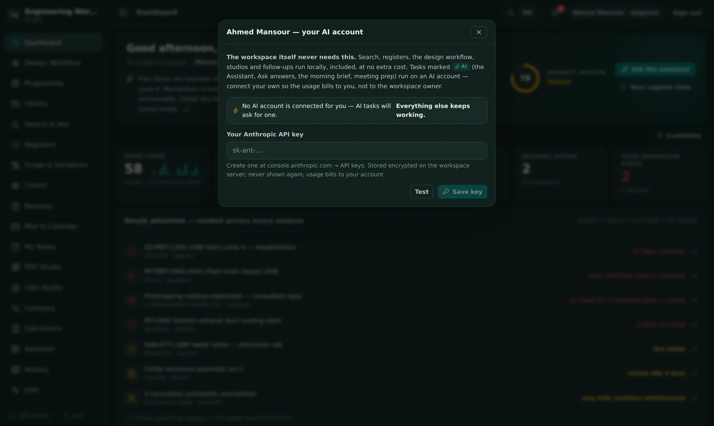

An operating system, not an app bundle
Multi-project workspaces, roles that mean something, automations that sweep hourly, an audit trail that remembers — and an onboarding tour so nobody needs a training course.
Every pillar shares one project record
Hourly automations chase so people don't have to
The guided tour teaches each role its own app


Administration without a consultant
Settings are organised into plain sections with a getting-started checklist, exact how-to hints on every card, and growth tools — demo project, value report, security one-pager — built in.
Getting-started checklist walks the workspace to ready
Every settings card carries exact click-paths
Demo project + trial pinning for safe prospect demos
Every capability, declared
The complete list.
The rest of the platform, page by page.
More pillars
ProgrammeThe Primavera P6 programme imported and viewed beside delivery — plan and record in one place.
Scope & VariationsA variation register plus a commercial radar that screens consultant comments for hidden entitlement.
ReviewsAI document review against the specifications — comment drafts with citations, an engineer approves.
My NotesA personal notes board, per user, next to the work.
History & JobsEvery background job visible with progress; every action in the audit trail.
Workspace
Multi-projectEach project keeps its own knowledge base, index, registers and workflows; switching re-points everything.
Project archiveRetire a project to a dated archive folder — documents, index and a database export — restorable.
Notifications centreEvery completion, arrival and escalation — in-app, and to your phone if you enable push.
Client portalA client-role account sees a progress portal — earned value, S-curve, issued transmittals — and nothing else.
Arabic-readyThe interface ships with an Arabic RTL option; the engine reads Arabic documents natively.
Trust
Sign-in alwaysNo anonymous access; rate-limited logins; two-factor enforced for administrators.
Project-pinned accountsTrial and demo users locked to one project — your live projects do not exist for them.
Encrypted per-user secretsMail sign-ins and AI keys encrypted at rest, per person.
Signed updatesUpdate packages must carry a valid signature to install.
BackupsScheduled local backups plus an encrypted nightly cloud backup of the app record.
Audit trailLogins, changes, approvals, substitutions, escalations — permanent and searchable.
Connections
Outlook / Microsoft 365Per-user sign-in for mail, calendar and OneDrive — tokens encrypted per user.
PortalsSupervised fetch from consultant portals; downloads land in an intake queue.
FeedsToken-secured calendar and BI feeds for the tools your office already uses.
MCP both waysYour AI agents can plug INTO the workspace, and the workspace can call external agent tools — the AI layer multiplies.
AutomationsHourly sweeps (follow-ups, escalations) and a weekly digest — visible, adjustable, off-switchable.
Against the field — the platform
One integrated record on hardware you own, one workspace price
Two or three subscriptions, per seat per month, forever
Fri–Sat weekends, Arabic documents, GCC reality built in
Localisation as an afterthought
Teaches itself: tour + manual + demo project
Admin certification courses and consultants
"The markup suite" is the well-known per-seat PDF application; "the construction cloud" is the big per-user-per-month platform. Both excellent at what they chose — the difference here is one integrated record, on your own server.
See it on a live workspace.
A real account inside a realistic demo project — request it in one minute.